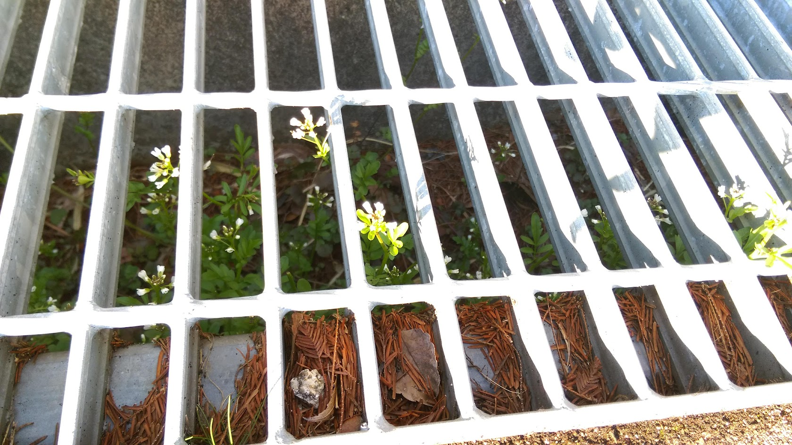
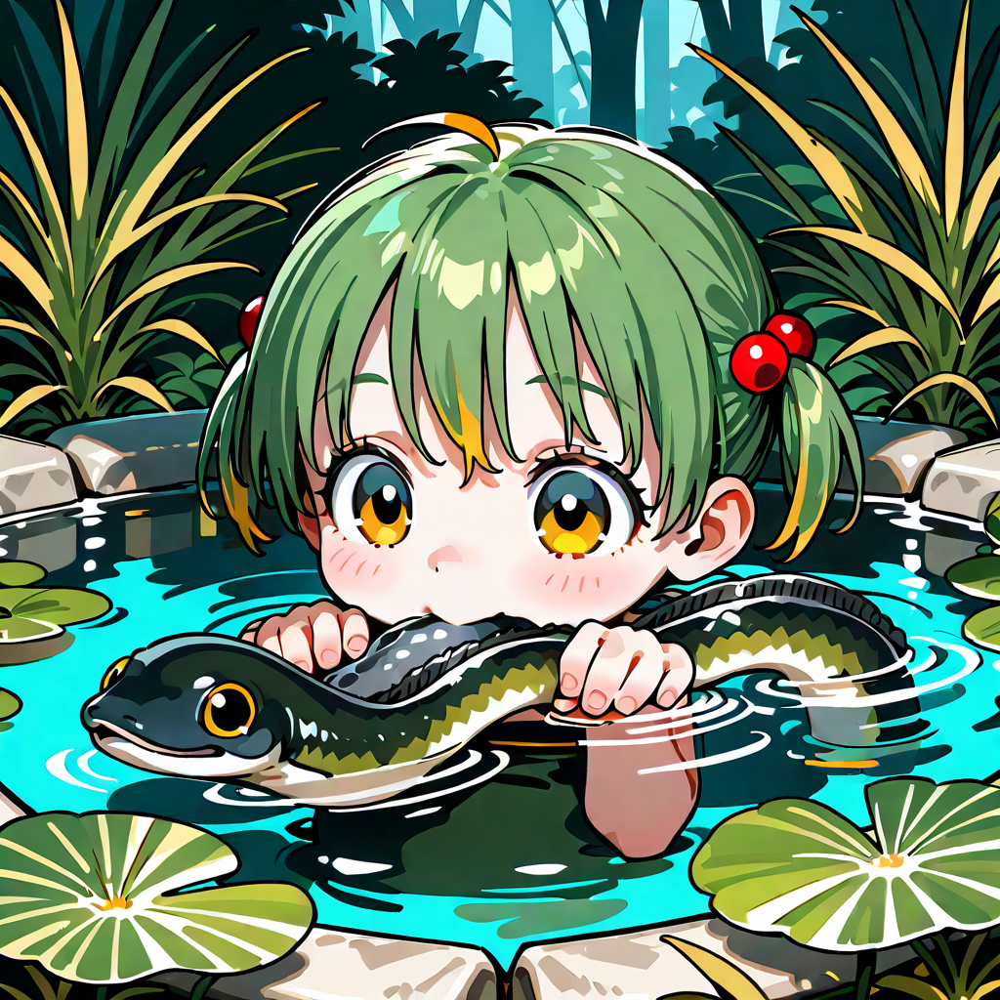
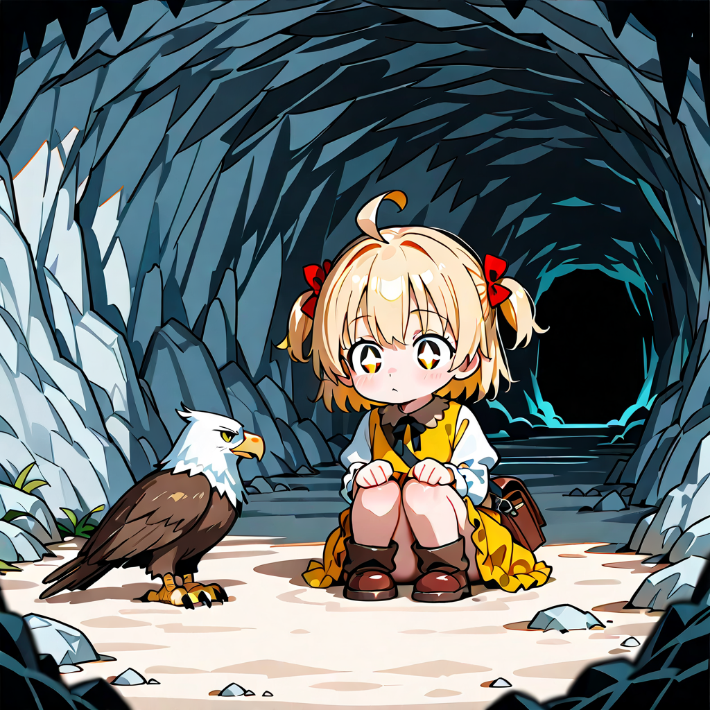
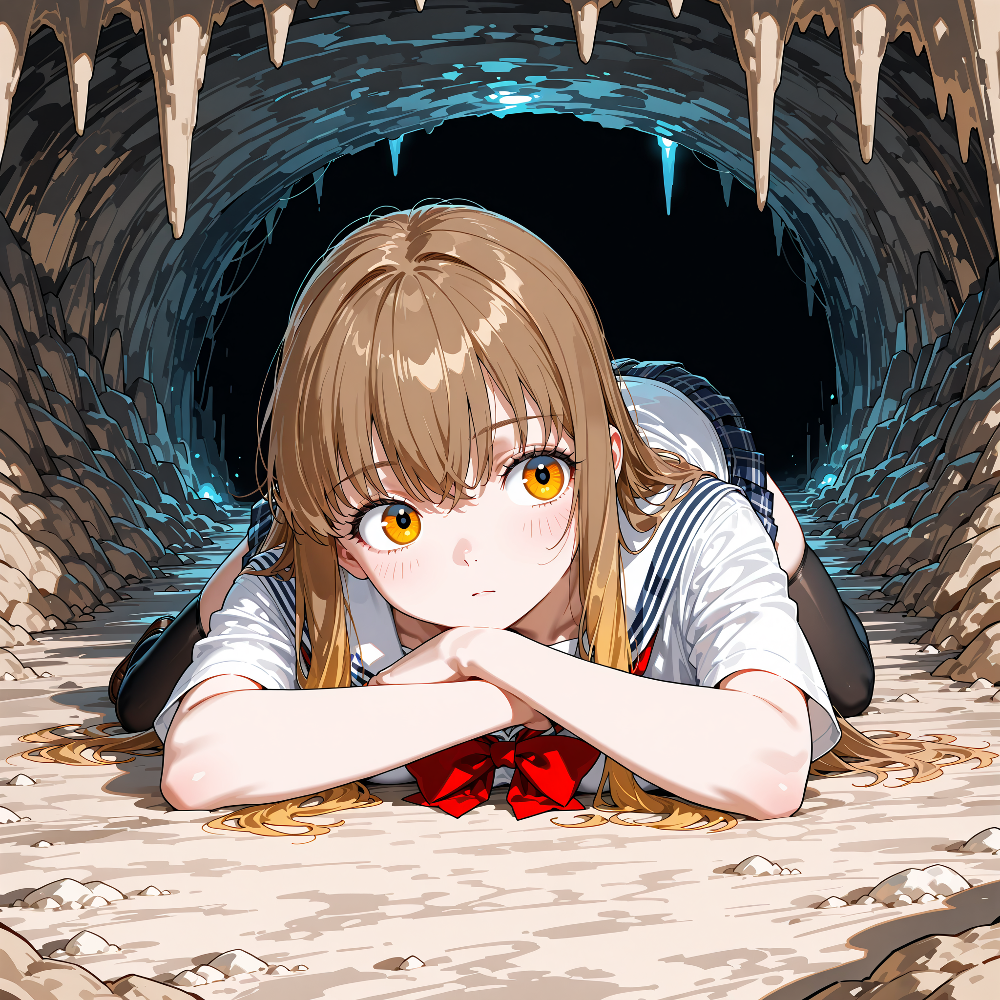
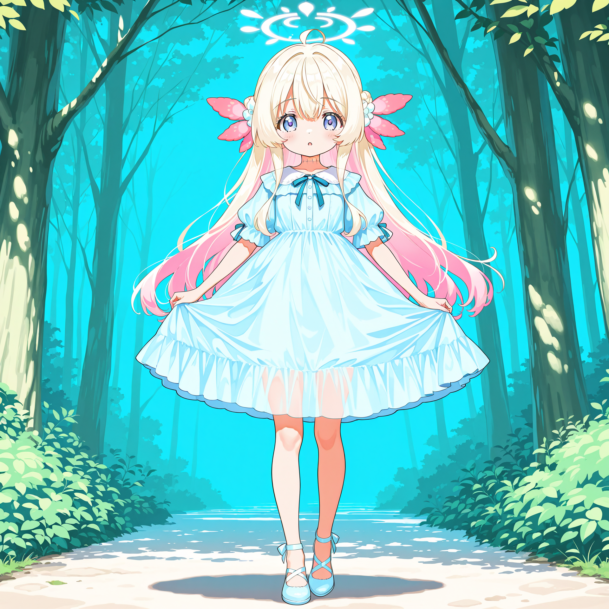
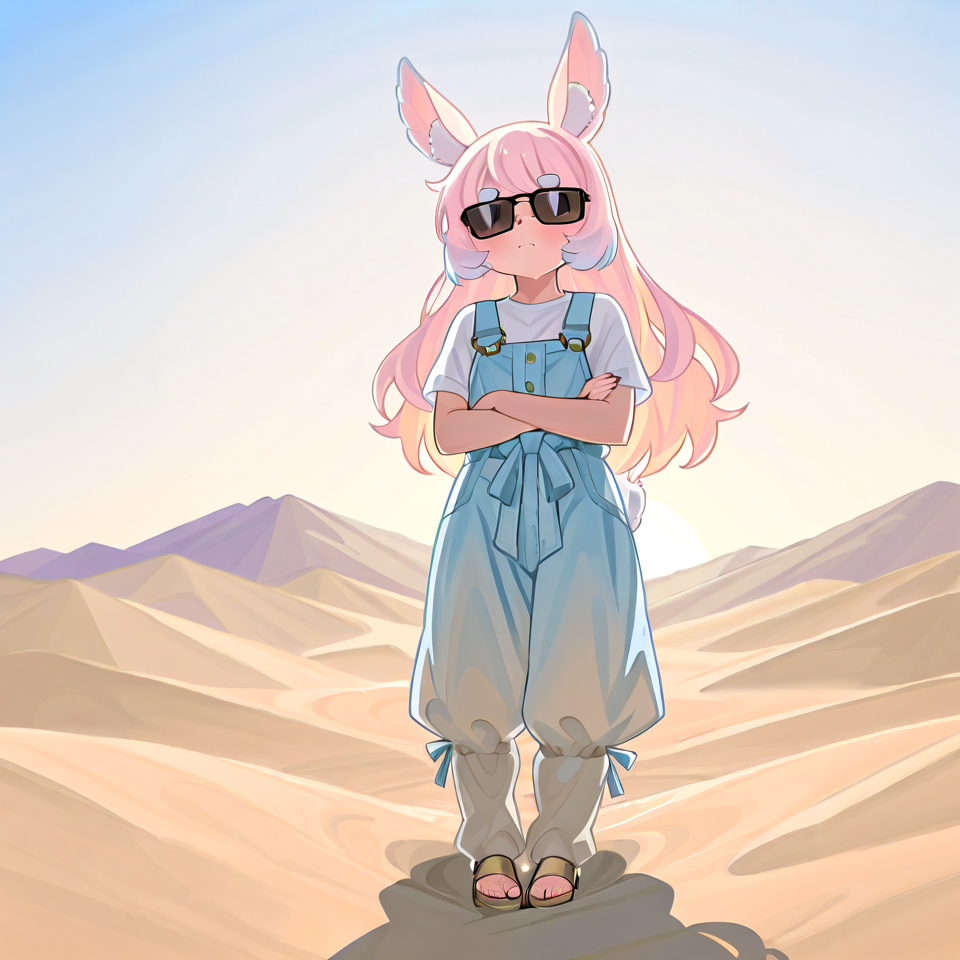
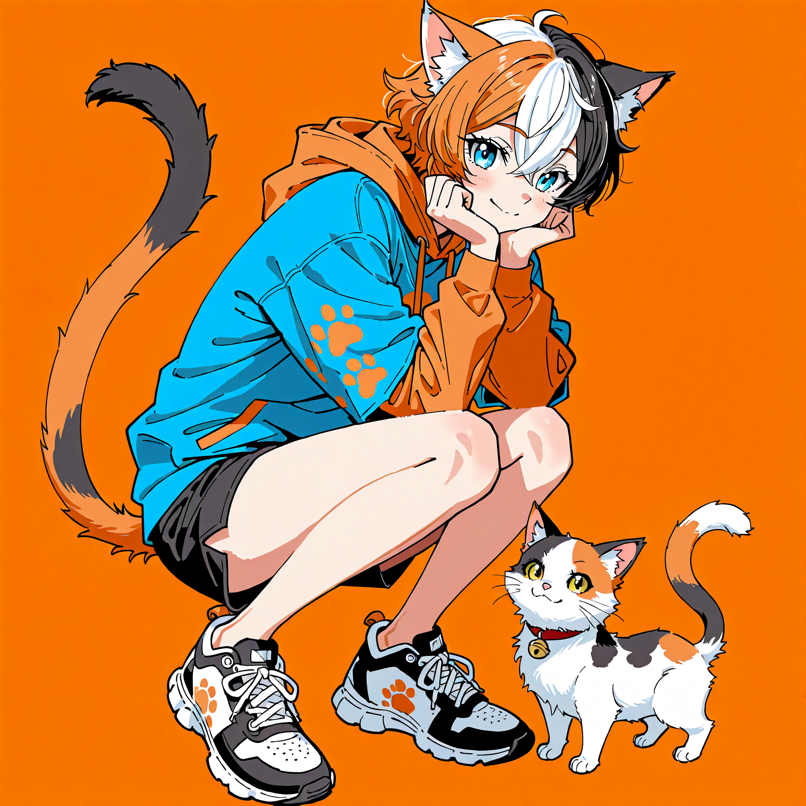
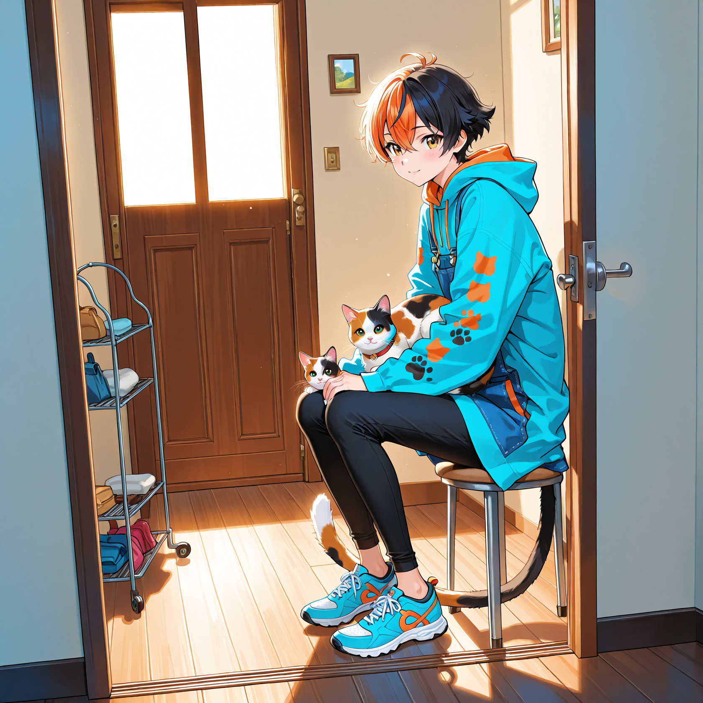

About.
なんかしてるひと
くろのとか名乗っている
音.
自作の音楽だよ～
キラキラ
モノクロ
sushi_no_uta (Spotify)
AI Images.
Creation & Prototype







Game.
ブラウザで遊べるゲーム。
01 / BROWSER GAME
Roguelike Prototype
ダンジョン探索をテーマにした軽量なWebゲームです。短時間で遊べる設計にしています。
02 / BROWSER GAME
Word Game Prototype
言葉遊びをテーマにしたゲームです。
人工言語.
Project Inactiveかつて開発されていた人工言語「新クォロ語」の記録です。（※現在は更新を停止しています）
新クォロ語（New Qolo）
旧体系を洗練し、論理的な構造と豊かな響きを両立させた人工言語です。
- 柔軟な格体系 「ga-（主格）」「ru-（対格）」といった接頭辞により、文中の役割を明確にしつつ自由な語順を実現。
- 独自の反転規則 単語を逆から綴ることで対義語を生成するルール。例: godur [良] → rudog [悪]。
- 機能語 ko 分野や集合、抽象的な領域への所属を示す前置詞。意味の限定を論理的に行います。
- 多機能な述語 動詞の語幹に時制や可能の接尾辞を連結。簡潔ながら緻密な表現が可能です。